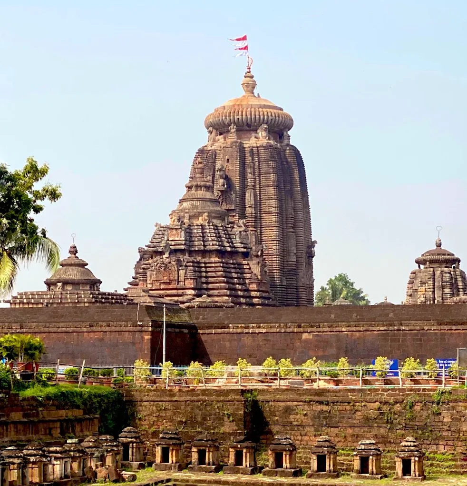

Bhubaneswar is the capital city of Odisha. It is known as the "Temple City of India" because of its beautiful ancient temples and rich cultural heritage.
My native place Bhubaneswar is located in the Khordha district of Odisha state. It is one of the fastest-growing smart cities in India.
Bhubaneswar is famous for its traditional Odissi dance, handicrafts, and festivals. Rath Yatra and Durga Puja are celebrated with great joy and devotion.
